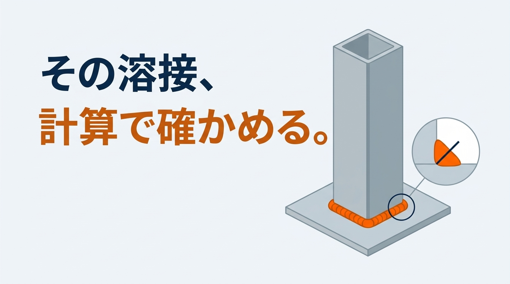
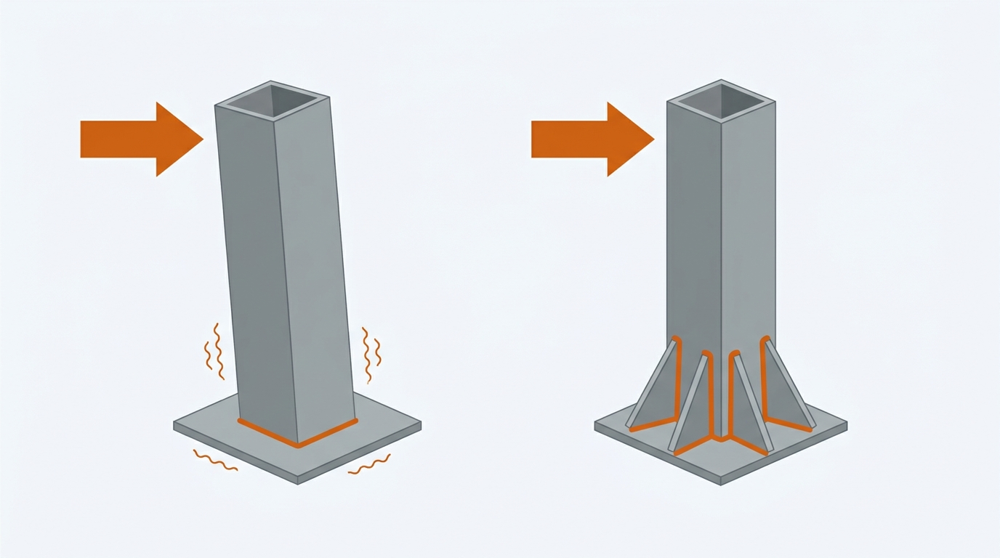

架台やブラケットを設計するとき、部材の強さは計算しても、溶接は「全周を溶接しておけば大丈夫」と済ませていないでしょうか。本記事では、溶接の強度計算の方法を、すみ肉溶接を中心に、計算例つきで解説します。ずらす力を受ける溶接だけでなく、架台の柱の根元のように曲げを受ける溶接まで扱います。
後半には、ご自身の条件を入れて試せる計算ツールと、おもりを吊れる溶接を選ぶゲームがあります。数値はすべて説明用の例で、一般論にとどまる値には「要確認」と記しています。
計算例の適用範囲
- 本記事は、すみ肉溶接を単純な形に置き換えて、基本の計算方法を説明するものです。実際の溶接部の安全性を保証するものではありません
- 溶接の計算の決まり（許容応力、有効長さ、サイズの制限）は、建築・橋・圧力容器・機械といった分野ごとの規準で違います。本記事の値は一例で、分野共通の決まりではありません
- 実際の設計では、適用する規準を決めたうえで、溶接の品質と検査、くり返しの力による疲労、母材側の強さ、熱によるひずみを確認してください
この記事でわかること
- 溶接の強度計算で使う3つの寸法（サイズ・のど厚・有効長さ）
- 製造業で使える、溶接の許容応力の決め方
- ずらす力を受ける溶接と、曲げを受ける溶接の計算例
- 自分の条件を入れて試せる、概算の計算ツール
- おもりを吊れる溶接のサイズと長さを選ぶゲーム
溶接の強度計算で使う3つの寸法
すみ肉溶接は、直角に合わせた2枚の板のすみを、三角形の断面で埋める溶接です。板を加工せずにそのまま溶接できるため、架台やブラケットの溶接の多くは、このすみ肉溶接です。強度計算で使う寸法は、サイズ、のど厚、有効長さの3つです。
サイズ（脚長）：三角形の直角をはさむ辺の長さ
図面で指示するのが、このサイズです。実際にできた溶接の辺の長さを脚長と呼びます。サイズは、薄い方の板厚以下を目安にします。板より大きな溶接を盛っても、先に板の方が負け、熱で板が溶け落ちたり、ひずんだりしやすくなるためです。サイズの上限と下限は規準によって決め方が違うので、適用する規準で確かめます（要確認）。
のど厚：強さを決める、いちばん薄い部分
三角形の直角の角から、斜めの辺までのいちばん短い距離が、のど厚です。2辺が同じ長さのすみ肉溶接では、のど厚 ＝ サイズ × 0.7 になります（正確には1÷√2で、約0.707倍です）。2辺の長さが違う場合は、この式をそのまま使えません。サイズ6mmなら、のど厚は4.2mmです。溶接の強さは、見た目の幅ではなく、こののど厚で計算します。
有効長さ：両端を除いた、計算に入れる長さ
溶接の始めと終わりは、溶け込みが足りなかったり、くぼみができたりしやすい部分です。そのため、建築の規準では、全長から両端のサイズ分を引いた長さを、有効長さとして計算に使います。本記事もこの方法で計算します。ただし、有効長さの決め方は規準によって違います。クレーンの鋼構造の計算基準（JIS）では、有効長さを「完全なのど厚をもつ溶接の長さ」とし、角を回り込む部分（回し溶接）は長さに含めないとしています（旧版で確認・現行版は要確認）。角パイプのまわりを途切れずに一周する全周溶接は、本記事では端がないものとして、長さを引かずに計算します。ただし、全周溶接にも、溶接の始めと終わりが重なるつなぎ目があり、そこは品質が落ちやすい部分です。長さを引かない計算は、強さをわずかに多く見積もる側になるため、余裕が小さいときは注意します。
短すぎる溶接は、強さが安定しません。有効長さの最小の目安は、建築の規準ではサイズの10倍以上かつ40mm以上、橋の規準ではサイズの10倍以上かつ80mm以上と、分野で違います。本記事では、建築の値を目安に使います（要確認）。
図面には、サイズと長さを数字で指示する
計算で決めたサイズと長さは、図面の溶接記号に数字で書きます。「全周溶接」とだけ書いて、サイズを指示しない図面では、できあがる溶接の大きさが作業者によって変わります。計算で使ったサイズが、図面に書かれているかを確かめます。とびとびに溶接する場合（断続溶接）は、1か所の長さと間隔も指示します。計算では、実際に溶接する部分の有効長さだけを数えます。
この章のまとめ
- サイズは、薄い方の板厚以下にする
- のど厚 ＝ サイズ × 0.7。強さはのど厚で計算する
- 有効長さ ＝ 全長 − 2×サイズ（建築の規準の方法。決め方は規準で違う）
溶接の許容応力の決め方｜製造業で使える基準
溶接の許容応力は、分野によって決め方が違います。インターネットで見つかる解説の多くは、建築の規準にもとづいています。ここでは、機械の構造物を対象にした基準を中心に整理します。
機械の構造物の例：クレーンの構造規格
クレーンの鋼構造を対象にした国の構造規格は、溶接部の許容応力を式で定めています。この規格はクレーンの構造部分が対象で、一般の機械の架台やブラケットに一律に当てはまる基準ではありません。ここでは、機械の構造物での考え方の例として紹介します。SS400（板厚16mm以下）の場合、次のようになります。
基本の許容応力 σa ＝ 降伏点 245÷1.5 と 引張強さ 400÷1.8 の小さい方 ＝ 163.3 MPa
許容せん断応力 τ ＝ σa÷√3 ＝ 94.3 MPa
すみ肉溶接の許容応力 ＝ 94.3 × 0.8 ＝ 75.4 MPa
この規格では、すみ肉溶接は、許容せん断応力に係数を掛けて許容応力を求めます。係数は鋼材の種類で決まり、SS400は0.8です（規格に名前が挙げられた鋼材では0.84。SS400や、一般的な角形鋼管のSTKR400は挙げられていません）。本記事の計算例は、この75.4MPaを使います。実際の設計では、設備の用途、力のかかり方、くり返しの有無、適用される法令や規格を確かめて、基準を選びます。なお、溶接の強さは、母材だけでなく溶接材料（溶接棒やワイヤ）の強さでも決まります。母材に合った溶接材料を使うことが前提です。
建築の規準の値と、目安としての比率
| 決め方 | SS400のすみ肉溶接 | 備考 |
|---|---|---|
| 機械の構造物の規格の例 | 75.4 MPa | 本記事で使う値 |
| 建築の法令（長期） | 90.5 MPa | 基準強度235÷(1.5×√3)。短期はこの1.5倍 |
建築の値は、建築基準法の施行令で定められたものです。溶接の専門団体の解説では、すみ肉溶接継手の許容応力は、突合せ継手の引張の許容応力の0.6〜0.7倍程度にとるのが普通とされています。同じ解説は、許容応力は構造の規格や安全の考え方によって違う、とも述べています。圧力容器のように、継手の形ごとに「継手効率」という係数を定めている分野もありますが、これはその分野の決まりで、一般の機械にそのまま使える値ではありません。どの値を使うにしても、採用した基準を計算書に書いておくことが大切です。くり返し力がかかる部分は、ここで示した値より大きく下げる必要があります。
この章のまとめ
- 機械の構造物の規格の例では、SS400のすみ肉溶接は75.4MPa
- 建築の法令では90.5MPa。分野で値が違う
- 採用した基準を明記する。くり返しの力には別の確認が要る
溶接の強度計算の方法｜基本の式と計算例1
のど厚 a ＝ 0.7 × S
のど断面の面積 A ＝ a × 有効長さ × 本数
応力 ＝ 力 P ÷ A ≦ 溶接の許容応力
すみ肉溶接は、引っ張る力も、ずらす力も、のど断面で受けるせん断として計算するのが、安全側の考え方です。
計算例1：ずらす力を受ける、両側2本の溶接
重ねた2枚の板を、両側2本のすみ肉溶接（サイズ6mm、長さ100mm）で止め、30,000N（約3トン）の力で引く場合です。
のど厚 a ＝ 0.7×6 ＝ 4.2 mm
有効長さ 100 − 2×6 ＝ 88 mm
面積 A ＝ 4.2×88×2 ＝ 739.2 mm²
応力 30,000÷739.2 ＝ 40.6 MPa ＜ 75.4 MPa（許容値の54％）
この溶接が受けられる力 739.2×75.4 ＝ 約55,700 N
必要な溶接の長さを、逆算する
設計では、力が先に決まっていて、必要な溶接の長さを知りたい場面が多くあります。式を逆にたどれば求められます。同じ30,000Nを、サイズ6mmの両側2本で受ける場合です。
必要な面積 30,000÷75.4 ＝ 398 mm²
1本あたりの有効長さ 398÷(4.2×2) ＝ 47.4 mm
強さから必要な溶接の長さ 47.4 ＋ 2×6 ＝ 59.4 mm
有効長さの目安（サイズの10倍＝60mm）を満たす長さ 60 ＋ 2×6 ＝ 72 mm 以上
有効長さに、両端のサイズ分を足し戻すのを忘れないようにします。この例では、強さから求めた有効長さ47.4mmが、最小の目安である60mm（サイズの10倍）を下回りました。このような場合は、目安の方を採ります。
この章のまとめ
- 応力 ＝ 力 ÷（のど厚 × 有効長さ × 本数）
- 引っ張る力も、ずらす力も、のど断面のせん断として計算する
曲げを受ける溶接の計算｜計算例2
ここからが本題です。ブラケットや柱の根元のように、溶接から離れた位置に力がかかると、溶接には曲げがかかります。このとき、力を面積で割るだけの計算では、応力を大きく見誤ります。
溶接を「線」とみなして、断面係数を求める
曲げを受ける溶接は、溶接を太さのない線とみなし、梁と同じように断面係数を求めて計算する方法があります。のど厚1mmあたりの断面係数（Zw）を求め、のど厚を掛けます。下の表の式は、のど厚が一様で、溶接が途切れずにつながっていると仮定して、形から導いたものです。
| 溶接の形 | のど厚1mmあたりの断面係数 Zw |
|---|---|
| 縦に2本（長さ d） | d² ÷ 3 |
| 上下に2本（長さ b、間隔 d） | b × d |
| 四角く一周（幅 b、高さ d） | b × d ＋ d² ÷ 3 |
曲げによる応力 ＝ 曲げモーメント M ÷（a × Zw）
合わせた応力 ＝ √（曲げによる応力² ＋ 力を面積で割った応力²）
本記事では、曲げによる応力も、力を面積で割った応力も、すべてのど断面にかかる応力として合わせ、すみ肉溶接の許容応力と比べます。これは、手計算で使われる簡易な一次評価の方法です。溶接の端や角に集まる力、片側だけの溶接で生じる偏り、母材の局部的な破壊、疲労は、この計算では評価できません。応力の合わせ方と、何と比べるかは、規準によって式が違います。適用する規準がある場合は、その式に従います（要確認）。
計算例2：先端に力がかかるブラケット
板のブラケットを、縦2本のすみ肉溶接（サイズ6mm、長さ150mm）で止め、溶接から200mm離れた位置に5,000N（約500kg）の力がかかる場合です。
有効長さ 150 − 2×6 ＝ 138 mm
面積 A ＝ 4.2×138×2 ＝ 1,159.2 mm²
曲げモーメント M ＝ 5,000×200 ＝ 1,000,000 N·mm
溶接線の断面係数 Zw ＝ 138²÷3 ＝ 6,348 mm²
曲げによる応力 1,000,000÷(4.2×6,348) ＝ 37.5 MPa
力を面積で割った応力 5,000÷1,159.2 ＝ 4.3 MPa
合わせた応力 √(37.5² ＋ 4.3²) ＝ 37.8 MPa ＜ 75.4 MPa（許容値の50％）
ワンポイント
- 力を面積で割るだけなら 4.3MPa。曲げを入れると 37.8MPa で、約9倍になる
- 腕の長さを2倍にすると、曲げによる応力も2倍になる
- 溶接を縦に長くすると、長さの2乗で効く。150mmを200mmにすると、応力は約半分になる
この章のまとめ
- 溶接から離れた位置に力がかかると、溶接は曲げを受ける
- 溶接を線とみなして断面係数を求め、のど厚を掛けて計算する
- 応力は、いちばん外側の端で最大になる
架台の柱の根元を計算する｜計算例3・4
架台の柱とベースプレートは、多くの場合、柱のまわりを一周するすみ肉溶接で止めます。この特集の前の2本の記事で求めた柱の根元の力を使って、溶接を確かめます。
計算例3：設備をのせる架台の柱脚
架台の強度計算の方法と例の計算例です。角パイプ □50×50×3.2 の柱を、サイズ3mmの全周溶接で止めます。柱脚の曲げモーメントは 294,300 N·mm、横向きの力は368N、軸力は1,306Nでした。
のど厚 a ＝ 0.7×3 ＝ 2.1 mm
溶接線の長さ 50×4 ＝ 200 mm（途切れない全周溶接として、端は引かない）
溶接線の断面係数 Zw ＝ 50×50 ＋ 50²÷3 ＝ 3,333 mm²
曲げによる応力 294,300÷(2.1×3,333) ＝ 42.0 MPa
軸力による応力 1,306÷(2.1×200) ＝ 3.1 MPa
合わせた応力 45.2 MPa ＜ 75.4 MPa（許容値の60％）
溶接線の寸法には、柱の外形の50mmを使い、角の丸みは無視しています。実際の角パイプは角が丸く、溶接線はこれより少し短くなるため、応力はこの値より大きくなります。初めの見積もりには使えますが、余裕が小さいときは、実際の形で確かめます。
計算例4：ロボット架台の柱脚
ロボット架台の強度計算の計算例です。角パイプ □100×100×6 の柱を、サイズ6mmの全周溶接で止めます。柱脚の曲げモーメントは 5,208,375 N·mm でした。
のど厚 a ＝ 4.2 mm
溶接線の断面係数 Zw ＝ 100×100 ＋ 100²÷3 ＝ 13,333 mm²
曲げによる応力 5,208,375÷(4.2×13,333) ＝ 93.0 MPa
軸力による応力 3,305÷(4.2×400) ＝ 2.0 MPa
合わせた応力 95.0 MPa ＞ 75.4 MPa（許容値の126％）
ロボット架台の記事で「確認していない」とした溶接部は、本記事で使っている許容応力75.4MPaと比べると、超えていました。どの基準で判定するかは設計者が決めることですが、少なくとも「全周を溶接したから大丈夫」とは言えない結果です。サイズは板厚の6mmより大きくできないため、溶接を太くする方法では解決できません。柱を □150×150×6 に上げると、溶接線が長くなり、応力は42.7MPaまで下がります。リブを足して溶接線を外へ広げる、筋かいを入れて柱脚の曲げそのものを減らす、といった方法も有効です。
柱の根元で、溶接のほかに確かめること
溶接の応力だけでは、柱の根元全体が成り立つかは判断できません。次の項目も確かめます。
- ベースプレートが曲がらないか（薄いと、溶接とアンカーに力が集まる）
- 角パイプの板そのものが、溶接のきわで破れたり、つぶれたりしないか
- 力がくり返しかかる場合の、疲労
- アンカーボルトと床が、引き抜きとせん断に耐えるか
- 角パイプの外側だけの溶接（片側溶接）になることによる、力の偏り
ロボットのように力がくり返しかかる設備では、疲労の確認を最優先にします。アンカーボルトとベースプレートの計算は、「アンカーボルトの引き抜き計算」で、この柱脚を例に解説しています。
この章のまとめ
- 柱脚の全周溶接は、柱脚の曲げモーメントで決まる
- 部材が合格でも、溶接が先に許容値を超えることがある
- サイズを上げられないときは、溶接線を外へ広げるか、曲げを減らす
自分の条件で試す｜溶接の強度計算ツール（概算）
ここまでの計算を、ご自身の条件に置き換えて試せます。溶接の形を選ぶと、図と入力する項目が切り替わります。初期値は、本記事の計算例2（曲げを受けるブラケット）と同じです。
すみ肉溶接の概算
等脚のすみ肉溶接を対象に、のど厚をサイズの0.7倍、有効長さを全長からサイズの2倍を引いた長さとし、のど断面の応力をすべて合わせて許容応力と比べる、簡易な概算です。角パイプは外形の寸法を使い、角の丸みを無視しています（実際の応力は少し大きくなります）。決め方は規準によって違います。曲げは、溶接線を「線」とみなして計算します。溶接の品質、くり返しの力による疲労、母材側の強さ、熱によるひずみは計算に含みません。結果は設計の可否を保証するものではありません。実際の設計では、適用する規準と専門家の確認にもとづいて判断してください。
溶接の形と、力のかかり方
オレンジが溶接、紺の矢印が力です。右は溶接を切った断面で、強さはのど厚で決まります。
溶接と力
許容応力の決め方（SS400の場合）
結果
| のど厚 a | mm |
|---|---|
| 有効長さ（1本） | mm |
| のど断面の面積 | mm² |
| 曲げによる応力（いちばん外側） | MPa |
| 軸力による応力 | MPa |
| 力 P を面積で割った応力 | MPa |
| 合わせた応力 | MPa |
| この溶接が受けられる力 | N |
実際の設備での計算・選定の確認は、オンラインでお引き受けします（全国対応）。料金の目安相談する ›
やってみよう｜おもりを吊れる溶接を選ぶゲーム
柱に溶接したブラケットの先に、おもりを吊ります。おもりの重さは、毎回変わります。選べるのは、溶接のサイズと長さだけです。足りないと溶接が割れ、多すぎると手間とひずみ、費用が大変になります。
溶接の大きさ選びゲーム
今回のおもりの重さ： kg
溶接のサイズ（脚長）
溶接の長さ（縦2本）
判定は、本記事の計算ツール（曲げを受けるブラケット・縦2本）と同じ式で求めた、合わせた応力の許容応力75.4MPaに対する割合で決めています（腕の長さ200mm、ブラケットの板厚12mm）。ゲームなので、110％までは成功とし、30％未満は「大きすぎ」としています。割れ方の動きは、分かりやすくするための演出です。
溶接の強度計算でよくある失敗

力を面積で割るだけで、曲げを見ていない
計算例2のとおり、曲げを入れると応力は約9倍になりました。溶接から力の位置までの距離があるときは、必ず曲げを計算します。
サイズを大きくすれば強くなると考える
サイズを板厚より大きくしても、板が先に負けます。大きな溶接は熱も多く入り、ひずみや割れの原因にもなります。強くしたいときは、溶接を太くするより、長くする、外へ広げる方が効きます。
片側だけの溶接に、開く向きの力をかける
板の片側だけを溶接した継手では、力の線と溶接の位置がずれて、余分な曲げが生じます。溶接の根元を開く向きに力がかかると、根元に力が集まり、のど断面の平均の応力だけでは強さを評価できません。曲げがかかる板は、両側を溶接するのが基本です。
有効長さを引かずに、全長で計算する
短い溶接ほど、両端を引く影響は大きくなります。長さ50mm、サイズ6mmの溶接では、有効長さは38mmで、全長の4分の3ほどです。全長で計算すると、強さを3割ほど多く見積もってしまいます。
くり返しの力を、止まっている力と同じに扱う
溶接部は、くり返しの力に弱い部分です。ロボットや往復する装置のように、力が何度もかかる場合は、本記事の許容応力をそのまま使えません。疲労を考えた確認が別に必要です（要確認）。
この章のまとめ
- 力の位置が離れているときは、曲げを計算する
- 太くするより、長くする・外へ広げる
- 片側溶接の開く向きの曲げと、くり返しの力に注意する
溶接の強度計算書に残す項目
溶接の計算を計算書に残すときは、あとから条件が変わっても見直せるように、次の項目を書いておきます。
- 溶接の種類と形（すみ肉・突合せ、両側・片側・全周）
- サイズ、のど厚、溶接の長さと有効長さ
- 溶接にかかる力と、その求め方（力の大きさ、向き、溶接からの距離）
- 母材の材質と板厚
- 許容応力の値と、採用した基準の名前
- 応力の計算と、許容値との比較
- 計算に含めていないもの（くり返しの力、溶接の検査の方法など）
突合せ溶接との違い
板と板を突き合わせ、板厚の全体を溶かしてつなぐ溶接を、突合せ溶接（完全溶込み溶接）と呼びます。のど厚が板厚と同じになるため、母材に近い強さが得られます。先に示した機械の構造物の規格の例では、母材の許容応力に0.8（鋼材によって0.84）を掛けた値を使います。すみ肉溶接より強い反面、開先の加工と溶接の手間がかかります。大きな曲げや、くり返しの力がかかる重要な部分は突合せ溶接、それ以外はすみ肉溶接、という使い分けが一般的です。
溶接の強度計算でよくある質問
全周を溶接しておけば、計算しなくても大丈夫ですか
大丈夫とは言えません。計算例4のように、全周を溶接していても、曲げが大きいと許容値を超えます。全周溶接は「溶接線がいちばん長くなる形」であって、強さを保証するものではありません。
ステンレスやアルミでも、同じ式で計算できますか
のど厚と有効長さから面積を求める考え方は同じです。ただし、許容応力は材料ごとに違います。特にアルミは、溶接の熱で母材の強さが下がるため、鋼と同じ感覚では計算できません。材料ごとの基準を確認してください（要確認）。
まとめ
溶接の強度計算は、のど厚と有効長さから面積を求め、力を割るのが基本です。そのうえで、力の位置が溶接から離れているときは、曲げを計算に入れます。架台の柱の根元では、部材より先に溶接が許容値を超えることがあります。
溶接を強くする方法は、太くすることではなく、長くすること、外へ広げること、そして曲げを減らすことです。まずは計算ツールで、ご自身の条件を試してみてください。
参考
・厚生労働省「クレーン構造規格」（鋼材の許容応力、溶接部の許容応力）
・日本溶接協会 溶接情報センター「溶接継手の許容応力はどのくらいにすればよいですか」
・建築の値：建築基準法施行令 第92条（溶接部の許容応力度）と、基準強度を定めた国の告示（基準強度 F＝235MPa として計算）